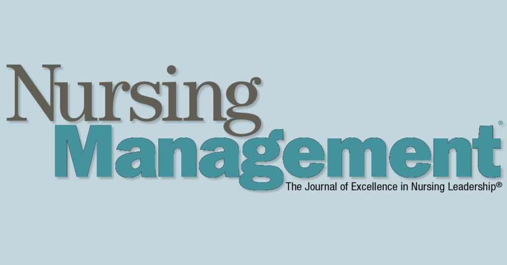
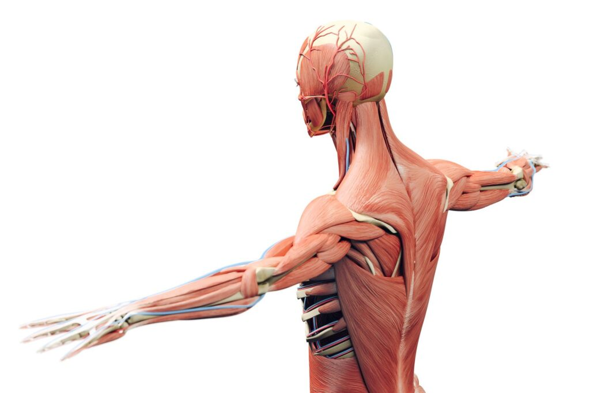
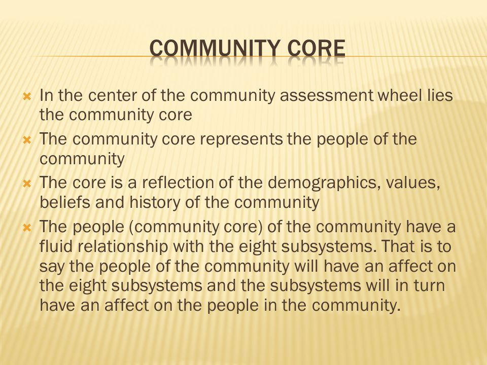

Certificate in Nursing
Entry-level nursing programme support with curriculum-guided notes and practical checklists.
Nurses revision sourceUganda pathwayChoose a nurse-focused pathway from the `Nurses revision` source set, then move through years, semesters, course units, topics, notes, quizzes and resources.

Entry-level nursing programme support with curriculum-guided notes and practical checklists.
Nurses revision sourceUganda pathwayIntegrated nursing support for comprehensive certificate learners.
Nurses revision sourcePlanned
Full Direct structure now mapped: Year 1-3, semester units and topic starter pages.
Open Direct trackFull Extension structure now mapped: Year 1-2 semester units and topic starter pages.
Open Extension trackBroad clinical diploma content for nursing students in Uganda.
Nurses revision sourcePlanned
Psychiatric nursing, therapeutic communication and mental health assessment resources.
Nurses revision sourcePlanned
Community diagnosis, prevention, epidemiology, health promotion and surveillance.
Nurses revision sourcePlannedUniversity-level revision support for BSN students and upgrading nurses.
Nurses revision sourcePlannedProfessional registration, CPD and licence renewal support pages.
Open licensing guide